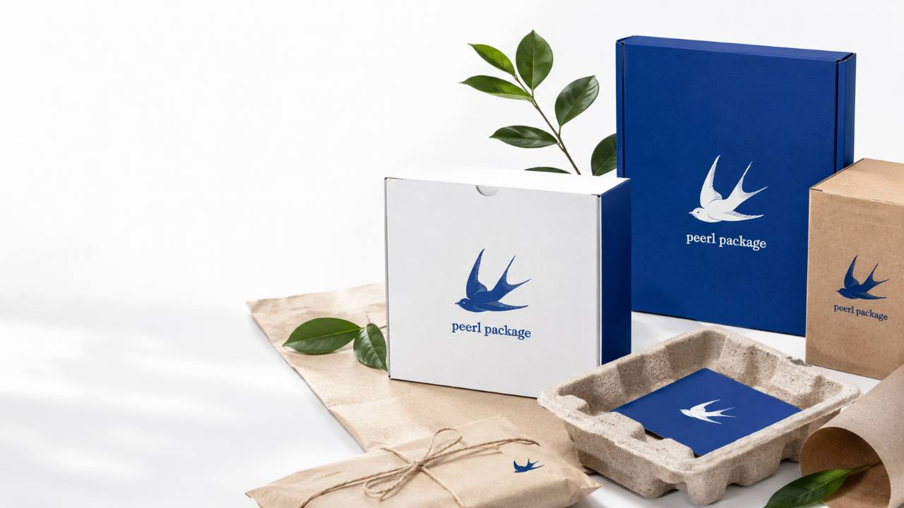

FSC 인증 종이
지속 가능한 산림 관리 기준에 맞는 인증지로 환경과 자원을 보호합니다.
ECO-FRIENDLY MATERIALS
페르패키지는 지속 가능한 미래를 위해 친환경 소재와 공정을 선택합니다. 환경에 미치는 영향을 최소화하면서도 품질과 디자인은 그대로 유지합니다.

지속 가능한 산림 관리 기준에 맞는 인증지로 환경과 자원을 보호합니다.
사용 후 재활용이 가능한 재생지를 사용하여 자원 순환을 실천합니다.
휘발성 유기화합물 배출을 줄이는 식물성 잉크 사용을 검토합니다.
수성 코팅과 접착제를 사용해 안전성과 친환경성을 높입니다.
자연에서 분해되는 소재 적용을 검토해 폐기 이후의 환경까지 고려합니다.
원료 선택부터 생산, 배송, 폐기까지 전 과정에서 환경 영향을 줄입니다.
에너지 절감과 폐기물 저감을 위한 공정을 검토합니다.
인체에 무해한 소재와 공정을 우선 검토해 안심하고 사용할 수 있습니다.
지속 가능한 경영을 통해 사회적 책임과 미래 가치를 생각합니다.
고객, 파트너와 함께 더 나은 지구 환경을 위해 지속적으로 노력합니다.